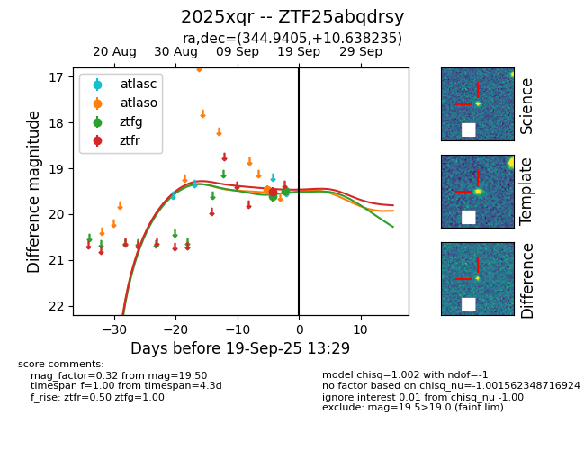

FINK: ZTF25abqdrsy
Lasair: ZTF25abqdrsy
ALeRCE: ZTF25abqdrsy
TNS: 2025xqr
YSE: 2025xqr
ZTF25abqdrsy (ztf,fink)
2025xqr (tns,yse)
equatorial (ra, dec) = (344.9405,+10.63824)
galactic (l, b) = (83.5349,-43.52795)

last atlaso=19.47, ztfg=19.50, ztfr=19.51
1 atlaso, 2 ztfg, 1 ztfr detections